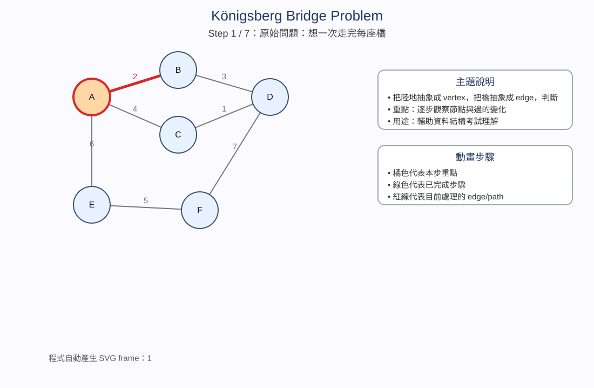
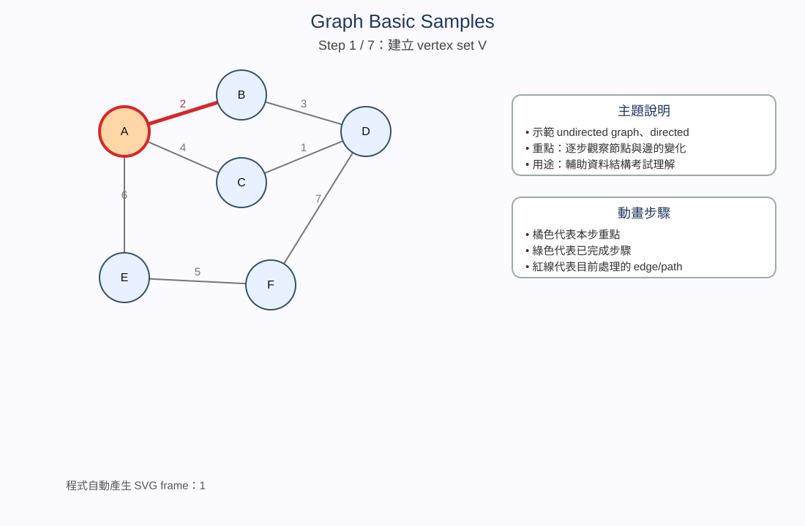
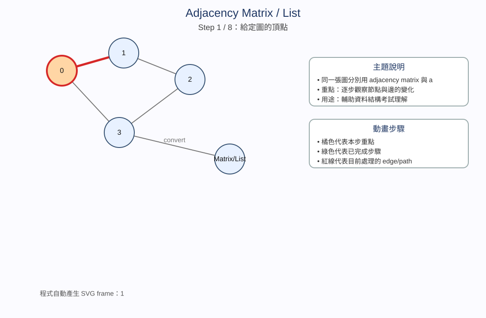
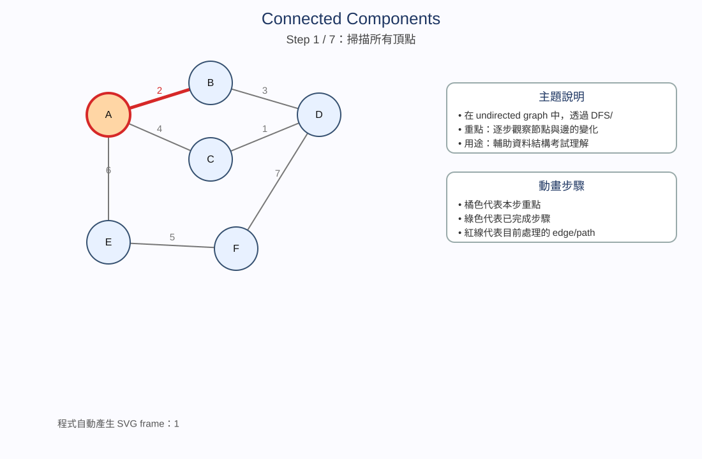
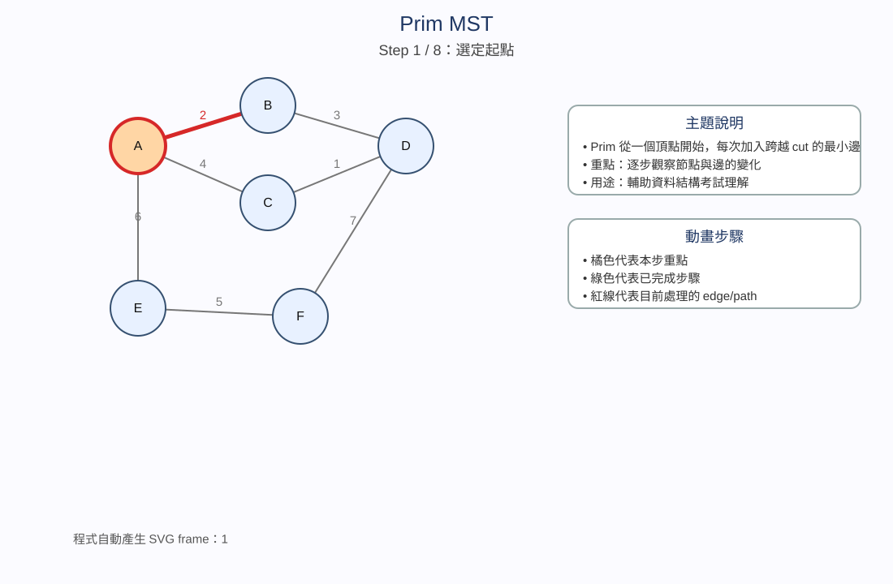
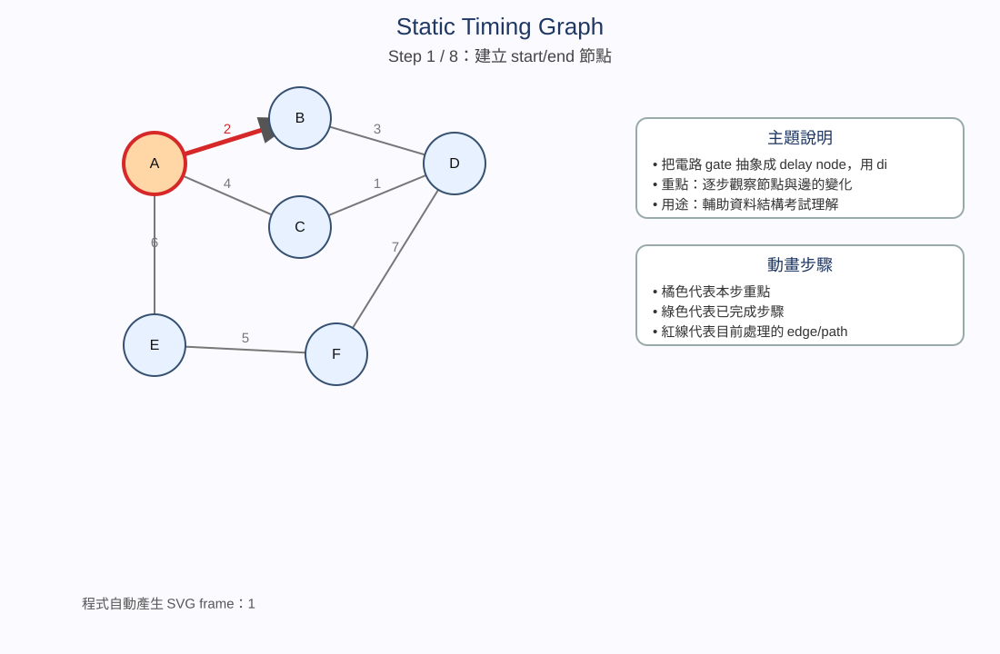

Königsberg Bridge Problem
主題說明
這個主題用「科尼斯堡七橋問題」引入 graph 的抽象化觀念。重點不是地圖本身，而是如何把真實世界問題轉換成資料結構模型：陸地區域對應到 vertex，橋對應到 edge，多座橋會形成 multigraph。當問題被轉成 graph 後，就可以用 degree 來判斷是否存在 Eulerian walk。考試常考的重點是：Eulerian walk 與 Eulerian circuit 的條件、每個頂點 degree 的意義，以及為什麼奇數度頂點數量會決定能不能一筆畫走完。這個例子也提醒你，graph 的核心能力是抽象化：忽略不重要的距離、形狀、河流彎曲，只留下「誰和誰相連」。
動畫說明
動畫逐步從真實橋梁問題開始，先呈現「想走過每座橋一次」的任務，再把陸地縮成節點 A、B、C、D，把橋轉成邊。接著每一個 step 逐漸加入七條橋，讓你看到 graph 是如何由邊集合 E 建立起來。後半段動畫會標示各 vertex 的 degree，並把奇數度的點凸顯出來。最後一步給出結論：因為奇數度頂點太多，所以不可能存在從某點出發、每條邊只走一次又完成要求的 Eulerian walk。播放時建議先慢速看抽象化過程，再用自動播放快速複習 degree 判斷。

程式主題：Königsberg Bridge Problem
程式目的：用 degree 判斷 Eulerian walk / circuit，對應科尼斯堡七橋問題。
C++ 程式碼
#include <iostream>
#include <vector>
using namespace std;
// 判斷無向圖是否可能有 Eulerian walk / circuit
// Eulerian circuit：所有頂點 degree 都是偶數
// Eulerian path：剛好 0 或 2 個奇數 degree 頂點
int main() {
vector<string> vertex = {"A", "B", "C", "D"};
vector<pair<int,int>> edges = {
{0,1}, {0,1}, {0,2}, {0,2}, {0,3}, {1,3}, {2,3}
};
vector<int> degree(vertex.size(), 0);
for (auto e : edges) {
degree[e.first]++;
degree[e.second]++;
}
int odd = 0;
cout << "Konigsberg Bridge Graph degree:\n";
for (int i = 0; i < (int)vertex.size(); i++) {
cout << vertex[i] << " degree = " << degree[i] << "\n";
if (degree[i] % 2 == 1) odd++;
}
cout << "Odd degree vertices = " << odd << "\n";
if (odd == 0) cout << "Result: has Eulerian circuit\n";
else if (odd == 2) cout << "Result: has Eulerian path only\n";
else cout << "Result: no Eulerian walk\n";
return 0;
}輸出結果
Konigsberg Bridge Graph degree: A degree = 5 B degree = 3 C degree = 3 D degree = 3 Odd degree vertices = 4 Result: no Eulerian walk
變數說明
| 名稱 | 說明 |
|---|---|
| vertex | 頂點名稱，代表抽象化後的陸地區域。 |
| edges | 橋梁轉成的邊，每一筆 pair 代表一座橋。 |
| degree | 每個頂點連接的邊數，用來判斷奇偶。 |
| odd | 奇數 degree 頂點數量，決定 Eulerian walk 是否存在。 |
函式說明
| 名稱 | 說明 |
|---|---|
| main() | 建立科尼斯堡 graph、計算 degree、判斷 Eulerian walk。 |
Graph Basic Samples
主題說明
這個主題整理 graph 的基本型態：undirected graph、directed graph、weighted graph、subgraph。Undirected graph 表示邊沒有方向，(u,v) 和 (v,u) 視為相同；directed graph 則用 arc 表示方向，
動畫說明
動畫會先建立頂點集合 V，再依序加入無向邊，讓你看出 graph 最基本的連接關係。接著同樣的節點被改成有向邊，動畫用箭頭凸顯方向差異。後面步驟會在邊上加入 weight，使原本單純的連接關係變成 network。最後動畫會抽出部分節點與邊形成 subgraph，幫助你分辨「整張 graph」與「局部子圖」的關係。每一張 SVG 都代表一個概念變化，不是單純換圖，而是從無方向、到有方向、到有權重、到子圖分析的完整流程。

程式主題：Graph Basic Samples
程式目的：示範無向圖、有向圖、加權圖三種基本 graph 型態。
C++ 程式碼
#include <iostream>
#include <vector>
using namespace std;
// 示範無向圖、有向圖、加權圖的基本儲存
struct Edge {
int from, to, weight;
bool directed;
};
void printEdge(const Edge& e) {
cout << e.from << (e.directed ? " -> " : " -- ") << e.to;
if (e.weight != 0) cout << " weight=" << e.weight;
cout << "\n";
}
int main() {
vector<Edge> graph = {
{0,1,0,false}, {0,2,0,false}, {1,3,0,false},
{3,4,7,true}, {4,5,3,true}
};
cout << "Graph Basic Samples:\n";
for (const auto& e : graph) printEdge(e);
cout << "Undirected edge: u--v equals v--u\n";
cout << "Directed edge: u->v is different from v->u\n";
cout << "Weighted edge: edge has cost / distance / delay\n";
return 0;
}輸出結果
Graph Basic Samples: 0 -- 1 0 -- 2 1 -- 3 3 -> 4 weight=7 4 -> 5 weight=3 Undirected edge: u--v equals v--u Directed edge: u->v is different from v->u Weighted edge: edge has cost / distance / delay
變數說明
| 名稱 | 說明 |
|---|---|
| Edge | 儲存 edge 的 from、to、weight 與是否有向。 |
| graph | 示範用的邊集合。 |
| directed | true 代表有向邊，false 代表無向邊。 |
| weight | 邊權重，0 表示此範例沒有特別標示成本。 |
函式說明
| 名稱 | 說明 |
|---|---|
| printEdge() | 依照 directed 與 weight 印出不同型態的邊。 |
| main() | 建立範例 edges 並輸出 graph 基本型態。 |
Adjacency Matrix / List
主題說明
這個主題比較 graph 的兩種常見表示法：adjacency matrix 與 adjacency list。Adjacency matrix 使用二維陣列記錄 vertex 之間是否相鄰，查詢兩點是否有邊通常很快，但空間固定是 O(n²)，適合 dense graph。Adjacency list 則讓每個 vertex 維護自己的鄰居串列，空間約為 O(n+e)，適合 sparse graph。考試常考：給一張圖畫出 matrix/list、判斷 directed 與 undirected 的矩陣是否對稱、分析空間複雜度，以及 BFS/DFS 為什麼常搭配 adjacency list。
動畫說明
動畫第一段先顯示原始 graph，接著依序加入 edge。每加入一條 edge，右側或下方的 matrix 位置就會被填入 1，讓你看到 graph edge 如何轉換成陣列儲存。下一段動畫把同一張圖改寫成 adjacency list，每個 vertex 後面列出相鄰節點。最後動畫會把 matrix 與 list 放在一起比較：matrix 強調快速查表，list 強調節省空間與方便走訪。播放動畫時可以注意每一條邊在兩種表示法中的位置，這正是寫 DFS/BFS 程式時最重要的資料來源。

程式主題：Adjacency Matrix / List
程式目的：用同一張圖建立 adjacency matrix 與 adjacency list，方便比較兩種表示法。
C++ 程式碼
#include <iostream>
#include <vector>
using namespace std;
// 同一張無向圖，同時建立 adjacency matrix 與 adjacency list
void addEdge(vector<vector<int>>& mat, vector<vector<int>>& adj, int u, int v) {
mat[u][v] = mat[v][u] = 1;
adj[u].push_back(v);
adj[v].push_back(u);
}
int main() {
int n = 5;
vector<vector<int>> mat(n, vector<int>(n, 0));
vector<vector<int>> adj(n);
addEdge(mat, adj, 0, 1);
addEdge(mat, adj, 0, 2);
addEdge(mat, adj, 1, 3);
addEdge(mat, adj, 2, 4);
cout << "Adjacency Matrix:\n";
for (auto& row : mat) {
for (int x : row) cout << x << ' ';
cout << '\n';
}
cout << "Adjacency List:\n";
for (int i = 0; i < n; i++) {
cout << i << ": ";
for (int v : adj[i]) cout << v << ' ';
cout << '\n';
}
return 0;
}輸出結果
Adjacency Matrix: 0 1 1 0 0 1 0 0 1 0 1 0 0 0 1 0 1 0 0 0 0 0 1 0 0 Adjacency List: 0: 1 2 1: 0 3 2: 0 4 3: 1 4: 2
變數說明
| 名稱 | 說明 |
|---|---|
| n | 圖的頂點數。 |
| mat | adjacency matrix，mat[u][v]=1 表示 u 與 v 相鄰。 |
| adj | adjacency list，adj[u] 儲存 u 的所有鄰居。 |
| u / v | 一條邊的兩個端點。 |
函式說明
| 名稱 | 說明 |
|---|---|
| addEdge() | 同時更新 adjacency matrix 與 adjacency list。 |
| main() | 建立圖並印出兩種 graph representation。 |
Weighted Network
主題說明
Weighted network 是在 graph 的 edge 上加入 weight 的模型。這些 weight 可以代表距離、成本、延遲、容量或風險。只要 edge 有權重，問題就不再只是「有沒有連接」，而是變成「哪條路比較便宜」、「哪棵 spanning tree 成本最低」、「哪條 path delay 最大或最小」。因此 weighted network 是 Dijkstra、Kruskal、Prim、Boruvka、Static Timing Analysis 的基礎。學習重點是要能把 edge weight 加總成 path cost，並知道不同演算法會用不同規則選邊。
動畫說明
動畫從一組節點開始，逐步加入帶有數字的 weighted edges。每一步都會讓你看到一條邊不只是連線，還多了一個 cost。接著動畫會示範不同 path 的 cost 可能不一樣，即使兩個節點都可到達，也要比較總權重。後段會凸顯低成本邊與候選路徑，連結到後續 MST 與 shortest path 的觀念。這個動畫的目的不是直接求完整答案，而是讓你建立「weight 會改變選擇策略」的直覺。
程式主題：Weighted Network
程式目的：計算 weighted network 中不同 path 的 total cost。
C++ 程式碼
#include <iostream>
#include <vector>
using namespace std;
// 加權網路：計算指定 path 的總成本
struct Edge { int to, weight; };
int findWeight(const vector<vector<Edge>>& g, int u, int v) {
for (auto e : g[u]) if (e.to == v) return e.weight;
return -1;
}
int pathCost(const vector<vector<Edge>>& g, const vector<int>& path) {
int cost = 0;
for (int i = 0; i + 1 < (int)path.size(); i++) {
int w = findWeight(g, path[i], path[i+1]);
if (w == -1) return -1;
cost += w;
}
return cost;
}
int main() {
vector<vector<Edge>> g(4);
g[0].push_back({1, 4});
g[1].push_back({2, 6});
g[0].push_back({3, 5});
g[3].push_back({2, 2});
vector<int> p1 = {0,1,2};
vector<int> p2 = {0,3,2};
cout << "Path 0->1->2 cost = " << pathCost(g, p1) << "\n";
cout << "Path 0->3->2 cost = " << pathCost(g, p2) << "\n";
cout << "Smaller path is 0->3->2\n";
return 0;
}輸出結果
Path 0->1->2 cost = 10 Path 0->3->2 cost = 7 Smaller path is 0->3->2
變數說明
| 名稱 | 說明 |
|---|---|
| g | 加權圖的 adjacency list。 |
| Edge | 包含目的地 to 與權重 weight。 |
| path | 指定要計算成本的頂點序列。 |
| cost | path 上所有 edge weight 的總和。 |
函式說明
| 名稱 | 說明 |
|---|---|
| findWeight() | 查詢 u 到 v 的邊權重。 |
| pathCost() | 把 path 上每一段 edge weight 加總。 |
| main() | 建立 weighted network 並比較兩條路徑成本。 |
DFS Traversal Tree
主題說明
DFS（Depth-First Search）是一種往深處優先探索的 graph traversal。它可以用 recursion 或 stack 實作。DFS 從 source vertex 出發，先拜訪一個未拜訪鄰居，然後繼續往更深層走；若遇到沒有未拜訪鄰居的 dead end，就回溯到上一層。DFS 會產生 traversal tree，其中被用來第一次拜訪新 vertex 的邊稱為 tree edge。DFS 常用於 connected components、articulation points、topological sort、cycle detection 等問題。
動畫說明
動畫會先標出起點，然後一格一格顯示 DFS 的拜訪順序。每當 DFS 選擇一個未拜訪鄰居，該節點會被凸顯，對應的 tree edge 也會被加入 traversal tree。當走到無路可走時，動畫會顯示 backtracking，表示程式回到上一個尚有其他分支的節點。最後一張圖會整理完整 DFS order 與 DFS tree。觀看時可把動畫想成遞迴呼叫堆疊：往下走代表呼叫新函式，回溯代表函式結束返回。
程式主題：DFS Traversal Tree
程式目的：用遞迴 DFS 呈現 visit、tree edge 與 backtracking。
C++ 程式碼
#include <iostream>
#include <vector>
using namespace std;
// DFS：深度優先搜尋，使用遞迴一路往深處走，再回溯
void dfs(int u, const vector<vector<int>>& adj, vector<bool>& visited) {
visited[u] = true;
cout << "Visit " << u << "\n";
for (int v : adj[u]) {
if (!visited[v]) {
cout << "Tree edge: " << u << " -> " << v << "\n";
dfs(v, adj, visited);
cout << "Backtrack to " << u << "\n";
}
}
}
int main() {
vector<vector<int>> adj = {
{1,2}, {0,3,4}, {0,5}, {1}, {1}, {2}
};
vector<bool> visited(adj.size(), false);
cout << "DFS from vertex 0:\n";
dfs(0, adj, visited);
return 0;
}輸出結果
DFS from vertex 0: Visit 0 Tree edge: 0 -> 1 Visit 1 Tree edge: 1 -> 3 Visit 3 Backtrack to 1 Tree edge: 1 -> 4 Visit 4 Backtrack to 1 Backtrack to 0 Tree edge: 0 -> 2 Visit 2 Tree edge: 2 -> 5 Visit 5 Backtrack to 2 Backtrack to 0
變數說明
| 名稱 | 說明 |
|---|---|
| adj | graph 的 adjacency list。 |
| visited | 記錄 vertex 是否已經被 DFS 拜訪。 |
| u | 目前 DFS 所在的頂點。 |
| v | 目前檢查的鄰接頂點。 |
函式說明
| 名稱 | 說明 |
|---|---|
| dfs() | 遞迴拜訪未走過的鄰居，並輸出 tree edge 與 backtracking。 |
| main() | 建立 graph 並從 vertex 0 啟動 DFS。 |
BFS Traversal Tree
主題說明
BFS（Breadth-First Search）是一種逐層探索的 graph traversal。它通常使用 queue 實作：source 先入隊，接著反覆取出隊首節點，將尚未拜訪的鄰居加入 queue。BFS 的重要特性是會先拜訪距離 source 一條邊的節點，再拜訪距離兩條邊的節點，因此在 unweighted graph 中，BFS 可以找到從 source 到各節點的最短邊數距離。考試常要求寫出 BFS order、queue 變化、level、以及 BFS tree。
動畫說明
動畫從 source vertex 入 queue 開始，逐步展示 queue 的先進先出順序。第一輪會展開 source 的鄰居，形成 level 1；第二輪展開 level 1 的節點，形成 level 2。每個 step 都對應到一次 dequeue 或 enqueue 的概念，並逐漸建立 BFS traversal tree。最後動畫會標示各節點所在 level，讓你清楚看到 BFS 是「一圈一圈向外擴張」，而不是像 DFS 一樣一路鑽到底。建議播放時注意 queue 中節點的順序，這是 BFS 結果是否正確的關鍵。
程式主題：BFS Traversal Tree
程式目的：用 queue 實作 BFS，顯示逐層走訪與 level。
C++ 程式碼
#include <iostream>
#include <vector>
#include <queue>
using namespace std;
// BFS：廣度優先搜尋，使用 queue 逐層擴張
void bfs(int start, const vector<vector<int>>& adj) {
vector<bool> visited(adj.size(), false);
vector<int> level(adj.size(), -1);
queue<int> q;
visited[start] = true;
level[start] = 0;
q.push(start);
while (!q.empty()) {
int u = q.front(); q.pop();
cout << "Dequeue " << u << ", level=" << level[u] << "\n";
for (int v : adj[u]) {
if (!visited[v]) {
visited[v] = true;
level[v] = level[u] + 1;
q.push(v);
cout << " Enqueue " << v << " by edge " << u << " -> " << v << "\n";
}
}
}
}
int main() {
vector<vector<int>> adj = {
{1,2}, {0,3,4}, {0,5}, {1}, {1}, {2}
};
cout << "BFS from vertex 0:\n";
bfs(0, adj);
return 0;
}輸出結果
BFS from vertex 0: Dequeue 0, level=0 Enqueue 1 by edge 0 -> 1 Enqueue 2 by edge 0 -> 2 Dequeue 1, level=1 Enqueue 3 by edge 1 -> 3 Enqueue 4 by edge 1 -> 4 Dequeue 2, level=1 Enqueue 5 by edge 2 -> 5 Dequeue 3, level=2 Dequeue 4, level=2 Dequeue 5, level=2
變數說明
| 名稱 | 說明 |
|---|---|
| q | BFS queue，控制先進先出走訪順序。 |
| visited | 記錄 vertex 是否已拜訪。 |
| level | 記錄每個 vertex 距離 source 的邊數。 |
| start | BFS 起點。 |
函式說明
| 名稱 | 說明 |
|---|---|
| bfs() | 使用 queue 逐層走訪 graph。 |
| main() | 建立 graph 並從 vertex 0 啟動 BFS。 |
Connected Components
主題說明
Connected component 是 undirected graph 中「彼此可到達」的一群 vertices。若一張圖不是 connected，就會被分成多個 connected components。找 components 的常見方法是掃描所有 vertices：遇到尚未拜訪的 vertex，就從它啟動 DFS 或 BFS，所有被這次 traversal 走到的點就是同一個 component；接著繼續掃描下一個未拜訪點，找到下一個 component。這個主題是理解 graph 分群、網路連通性與 disjoint subgraphs 的基礎。
動畫說明
動畫會先呈現一張不完全連通的 graph，然後從第一個未拜訪節點啟動 DFS/BFS。被走到的所有節點會用同一種標示形成 component 1。接著動畫繼續掃描剩餘節點，找到新的未拜訪點後，再啟動第二次 traversal，形成 component 2。最後所有 vertices 都會被分組，顯示每個 connected component 的範圍。動畫重點在於「一次 traversal 找一整塊」，不是每個點單獨判斷。

程式主題：Connected Components
程式目的：用 DFS 掃描所有頂點，找出 connected components。
C++ 程式碼
#include <iostream>
#include <vector>
using namespace std;
// DFS 找出同一個 connected component
void dfs(int u, int id, const vector<vector<int>>& adj, vector<int>& comp) {
comp[u] = id;
for (int v : adj[u]) {
if (comp[v] == -1) dfs(v, id, adj, comp);
}
}
int main() {
vector<vector<int>> adj = {
{1}, {0,2}, {1}, {4}, {3}, {}
};
vector<int> comp(adj.size(), -1);
int count = 0;
for (int i = 0; i < (int)adj.size(); i++) {
if (comp[i] == -1) {
dfs(i, count, adj, comp);
count++;
}
}
cout << "Number of connected components = " << count << "\n";
for (int i = 0; i < (int)comp.size(); i++) {
cout << "Vertex " << i << " belongs to component " << comp[i] << "\n";
}
return 0;
}輸出結果
Number of connected components = 3 Vertex 0 belongs to component 0 Vertex 1 belongs to component 0 Vertex 2 belongs to component 0 Vertex 3 belongs to component 1 Vertex 4 belongs to component 1 Vertex 5 belongs to component 2
變數說明
| 名稱 | 說明 |
|---|---|
| comp | 每個 vertex 所屬的 component 編號。 |
| count | 目前找到的 connected component 數量。 |
| id | 正在標記的 component 編號。 |
| adj | 無向圖 adjacency list。 |
函式說明
| 名稱 | 說明 |
|---|---|
| dfs() | 從一個未拜訪頂點出發，標記整個 component。 |
| main() | 掃描所有 vertex，計算 component 總數。 |
Articulation DFN / LOW
主題說明
Articulation point（割點）是指移除後會使 connected component 數量增加的 vertex。DFS 可用 dfn 與 low 來判斷割點。dfn[u] 是 u 被 DFS 拜訪的順序；low[u] 是 u 或 u 的子孫透過 tree edge 與 back edge 能回到的最小 dfn。若對某個 DFS tree edge (u, child)，滿足 low[child] >= dfn[u]，代表 child 子樹無法透過 back edge 回到 u 的祖先，因此 u 可能是 articulation point。Root 則要看它是否有兩個以上 DFS children。這是 graph Part I 裡較容易混淆但非常重要的演算法。
動畫說明
動畫第一段先執行 DFS，依序標上 dfn 編號。接著每個 step 會顯示 low 值如何初始化、如何因為 back edge 被更新，以及如何從 child 回傳到 parent。當動畫走到某個 child 子樹時，會比較 low[child] 與 dfn[u]，若 low[child] 無法小於 dfn[u]，就把 u 標成 articulation point。最後圖會同時呈現 DFS tree、dfn、low 與割點結果。觀看時請特別注意 back edge，因為 low 值能不能降低，通常就決定某點是不是割點。
程式主題：Articulation DFN / LOW
程式目的：用 DFS dfn / low 判斷 articulation point。
C++ 程式碼
#include <iostream>
#include <vector>
#include <algorithm>
using namespace std;
// 使用 DFS 的 dfn / low 判斷 articulation point
int timerCnt = 0;
void dfs(int u, int parent, const vector<vector<int>>& adj,
vector<int>& dfn, vector<int>& low, vector<bool>& isCut) {
dfn[u] = low[u] = ++timerCnt;
int child = 0;
for (int v : adj[u]) {
if (v == parent) continue;
if (dfn[v] == 0) {
child++;
dfs(v, u, adj, dfn, low, isCut);
low[u] = min(low[u], low[v]);
if (parent != -1 && low[v] >= dfn[u]) isCut[u] = true;
} else {
low[u] = min(low[u], dfn[v]);
}
}
if (parent == -1 && child >= 2) isCut[u] = true;
}
int main() {
vector<vector<int>> adj = {
{1}, {0,2,3}, {1}, {1,4,5}, {3}, {3}
};
vector<int> dfn(adj.size(), 0), low(adj.size(), 0);
vector<bool> isCut(adj.size(), false);
dfs(0, -1, adj, dfn, low, isCut);
for (int i = 0; i < (int)adj.size(); i++) {
cout << "v=" << i << " dfn=" << dfn[i] << " low=" << low[i];
if (isCut[i]) cout << " articulation";
cout << "\n";
}
return 0;
}輸出結果
v=0 dfn=1 low=1 v=1 dfn=2 low=2 articulation v=2 dfn=3 low=3 v=3 dfn=4 low=4 articulation v=4 dfn=5 low=5 v=5 dfn=6 low=6
變數說明
| 名稱 | 說明 |
|---|---|
| dfn | DFS 拜訪順序編號。 |
| low | 透過 tree edge / back edge 可回到的最小 dfn。 |
| isCut | 記錄某 vertex 是否為 articulation point。 |
| timerCnt | 產生 dfn 的全域時間戳。 |
函式說明
| 名稱 | 說明 |
|---|---|
| dfs() | 計算 dfn / low 並判斷 articulation point。 |
| main() | 建立範例圖並輸出每個 vertex 的 dfn、low 與割點結果。 |
Kruskal MST
主題說明
Kruskal 是 minimum-cost spanning tree 的經典演算法。它的策略是先把所有 weighted edges 依照 weight 由小到大排序，然後從最便宜的邊開始考慮。如果加入這條邊不會形成 cycle，就把它加入 MST；如果會形成 cycle，就跳過。為了有效判斷 cycle，Kruskal 常搭配 disjoint set / union-find。演算法停止條件是 MST 已經選到 n-1 條邊。考試常考排序後選邊順序、哪條邊因 cycle 被拒絕、以及 MST total cost。
動畫說明
動畫會先列出所有 weighted edges，接著依照 weight 排序。每一個 step 都代表 Kruskal 檢查一條邊：若兩端點屬於不同 set，動畫會把該邊加入 MST 並合併集合；若兩端點已經在同一 set，動畫會標示該邊會造成 cycle，因此跳過。隨著 step 推進，MST 會逐漸長出來，直到選滿 n-1 條安全邊。觀看動畫時可以把每個 component 想成 union-find 的集合，這樣比較容易理解為什麼某些低權重邊仍然不能選。
程式主題：Kruskal MST
程式目的：用排序邊與 disjoint set 實作 Kruskal MST。
C++ 程式碼
#include <iostream>
#include <vector>
#include <algorithm>
using namespace std;
// Disjoint Set：用來判斷 Kruskal 選邊是否會形成 cycle
struct DSU {
vector<int> parent, rankv;
DSU(int n): parent(n), rankv(n,0) { for(int i=0;i<n;i++) parent[i]=i; }
int find(int x) { return parent[x] == x ? x : parent[x] = find(parent[x]); }
bool unite(int a, int b) {
a = find(a); b = find(b);
if (a == b) return false;
if (rankv[a] < rankv[b]) swap(a,b);
parent[b] = a;
if (rankv[a] == rankv[b]) rankv[a]++;
return true;
}
};
struct Edge { int u, v, w; };
int main() {
int n = 5;
vector<Edge> edges = {{0,1,1},{0,2,3},{1,2,2},{1,3,4},{2,4,5},{3,4,7}};
sort(edges.begin(), edges.end(), [](Edge a, Edge b){ return a.w < b.w; });
DSU dsu(n);
int total = 0;
cout << "Kruskal MST selected edges:\n";
for (auto e : edges) {
if (dsu.unite(e.u, e.v)) {
cout << e.u << "-" << e.v << " weight=" << e.w << "\n";
total += e.w;
}
}
cout << "Total MST cost = " << total << "\n";
return 0;
}輸出結果
Kruskal MST selected edges: 0-1 weight=1 1-2 weight=2 1-3 weight=4 2-4 weight=5 Total MST cost = 12
變數說明
| 名稱 | 說明 |
|---|---|
| edges | 全部候選 weighted edges。 |
| DSU | disjoint set，用來判斷加入邊是否形成 cycle。 |
| total | MST 總成本。 |
| rankv | union by rank 的輔助陣列。 |
函式說明
| 名稱 | 說明 |
|---|---|
| find() | 找出頂點所在集合代表。 |
| unite() | 合併兩個不同集合；若已同集合則代表會形成 cycle。 |
| main() | 排序 edges 並執行 Kruskal MST。 |
Prim MST
主題說明
Prim 也是求 minimum-cost spanning tree 的演算法，但策略和 Kruskal 不同。Prim 從任意起點開始，維護一個已加入 MST 的 visited set，每一步從「已加入集合」到「未加入集合」的 crossing edges 中選權重最小的邊，將新 vertex 加入 MST。它像是從一個點慢慢擴張成整棵樹。Prim 常可用 priority queue 優化。考試常比較 Prim 與 Kruskal：Prim 是長一棵樹，Kruskal 是合併多個 components。
動畫說明
動畫先指定起點，並把它放入 visited set。接著每一步會標示目前所有 crossing edges，也就是一端在 visited set、另一端還沒加入的候選邊。動畫會選出其中最小 weight 的邊，將新 vertex 加入 MST，然後更新候選邊集合。這個過程會一直重複，直到所有 vertices 都被納入。觀看動畫時要注意 Prim 不會先排序全部 edges，而是根據目前 tree 的邊界動態選擇最小 crossing edge。

程式主題：Prim MST
程式目的：用 priority queue 實作 Prim MST，從單一起點逐步擴張。
C++ 程式碼
#include <iostream>
#include <vector>
#include <queue>
using namespace std;
// Prim：從一個起點開始，每次選最小 crossing edge 擴張 MST
struct Edge { int to, w; };
struct State {
int w, from, to;
bool operator>(const State& other) const { return w > other.w; }
};
int main() {
int n = 5;
vector<vector<Edge>> adj(n);
auto add = [&](int u, int v, int w){ adj[u].push_back({v,w}); adj[v].push_back({u,w}); };
add(0,1,1); add(0,2,3); add(1,2,2); add(1,3,4); add(2,4,5); add(3,4,7);
vector<bool> used(n, false);
priority_queue<State, vector<State>, greater<State>> pq;
used[0] = true;
for (auto e : adj[0]) pq.push({e.w, 0, e.to});
int total = 0;
cout << "Prim MST selected edges:\n";
while (!pq.empty()) {
auto cur = pq.top(); pq.pop();
if (used[cur.to]) continue;
used[cur.to] = true;
total += cur.w;
cout << cur.from << "-" << cur.to << " weight=" << cur.w << "\n";
for (auto e : adj[cur.to]) if (!used[e.to]) pq.push({e.w, cur.to, e.to});
}
cout << "Total MST cost = " << total << "\n";
return 0;
}輸出結果
Prim MST selected edges: 0-1 weight=1 1-2 weight=2 1-3 weight=4 2-4 weight=5 Total MST cost = 12
變數說明
| 名稱 | 說明 |
|---|---|
| adj | 加權無向圖的 adjacency list。 |
| used | 記錄 vertex 是否已加入 MST。 |
| pq | priority queue，儲存 crossing edges。 |
| State | 候選邊，包含權重、來源與目的頂點。 |
函式說明
| 名稱 | 說明 |
|---|---|
| add() | 加入無向 weighted edge。 |
| operator>() | 讓 priority queue 依權重由小到大取邊。 |
| main() | 執行 Prim MST。 |
Sollin / Boruvka MST
主題說明
Sollin/Boruvka 是另一種 MST 演算法。它的特色是每一輪讓每個 component 同時選出自己最便宜的 outgoing edge，然後把這些安全邊加入，使多個 components 合併成較大的 components。下一輪再對新的 components 重複同樣動作，直到只剩一個 component。它和 Kruskal 一樣有 component 合併概念，但不是一次只考慮一條排序邊，而是每一輪平行地替每個 component 找 cheapest outgoing edge。
動畫說明
動畫一開始把每個 vertex 視為獨立 component。第一輪中，每個 component 都會尋找連到外部的最小權重邊，動畫會同時標示多條 cheapest outgoing edges。接著這些邊被加入後，component 會合併，圖上會看到分組數量明顯減少。第二輪再對新的 components 重複找最便宜 outgoing edge。最後只剩一個 component 時，所有選到的邊就構成 MST。動畫重點是「每輪多個 component 同時長大」，這和 Prim 一次擴張一個頂點、Kruskal 一次檢查一條邊不同。
程式主題：Sollin / Boruvka MST
程式目的：用 Boruvka 每輪每個 component 選 cheapest outgoing edge。
C++ 程式碼
#include <iostream>
#include <vector>
using namespace std;
// Boruvka：每一輪每個 component 選自己的 cheapest outgoing edge
struct Edge { int u, v, w; };
struct DSU {
vector<int> p;
DSU(int n): p(n) { for(int i=0;i<n;i++) p[i]=i; }
int find(int x){ return p[x]==x ? x : p[x]=find(p[x]); }
bool unite(int a, int b){ a=find(a); b=find(b); if(a==b) return false; p[b]=a; return true; }
};
int main() {
int n = 5;
vector<Edge> edges = {{0,1,1},{0,2,3},{1,2,2},{1,3,4},{2,4,5},{3,4,7}};
DSU dsu(n);
int components = n, total = 0, round = 1;
while (components > 1) {
vector<int> cheapest(n, -1);
for (int i = 0; i < (int)edges.size(); i++) {
int a = dsu.find(edges[i].u), b = dsu.find(edges[i].v);
if (a == b) continue;
if (cheapest[a] == -1 || edges[i].w < edges[cheapest[a]].w) cheapest[a] = i;
if (cheapest[b] == -1 || edges[i].w < edges[cheapest[b]].w) cheapest[b] = i;
}
cout << "Round " << round++ << ":\n";
for (int i = 0; i < n; i++) {
int id = cheapest[i];
if (id != -1 && dsu.unite(edges[id].u, edges[id].v)) {
cout << " add " << edges[id].u << "-" << edges[id].v << " weight=" << edges[id].w << "\n";
total += edges[id].w;
components--;
}
}
}
cout << "Total MST cost = " << total << "\n";
return 0;
}輸出結果
Round 1: add 0-1 weight=1 add 1-2 weight=2 add 1-3 weight=4 add 2-4 weight=5 Total MST cost = 12
變數說明
| 名稱 | 說明 |
|---|---|
| components | 目前 component 數量。 |
| cheapest | 每個 component 找到的最小 outgoing edge 編號。 |
| DSU | 合併 components 的 disjoint set。 |
| round | Boruvka 演算法目前第幾輪。 |
函式說明
| 名稱 | 說明 |
|---|---|
| find() | 找出 component 代表。 |
| unite() | 合併兩個 components。 |
| main() | 逐輪執行 Boruvka MST。 |
Static Timing Graph
主題說明
Static Timing Analysis 可以用 directed acyclic graph 表示電路延遲。原本的 logic gates 會被抽象成 delay nodes，signal flow 會變成 directed arcs。從 start node 到 end node 的不同 paths 代表不同訊號傳遞路徑，每條 path 的 delay 可由節點或邊的 delay 累加。最長 delay path 通常對應 critical path，會限制電路最高工作頻率；最短 delay 則可能與 hold time 相關。這個主題展示 graph 不只用在一般網路，也能用在 IC timing 分析。
動畫說明
動畫先建立 start 與 end 節點，再逐步把每個 gate 轉成 delay node，並依 signal direction 加入 directed arcs。接著每一步會沿著不同 path 累積 arrival time，展示 delay 如何從前級傳到後級。動畫後半段會比較多條 path 的總 delay，最後凸顯 longest delay / critical path。觀看時請注意箭頭方向，因為 timing graph 是有向圖；也要注意 path delay 是逐段累加，不是只看單一 edge。這能幫助你理解為什麼 graph traversal 與 longest path 概念可以用來分析電路速度。

程式主題：Static Timing Graph
程式目的：用 DAG longest path 計算 static timing graph 的 arrival time 與 critical delay。
C++ 程式碼
#include <iostream>
#include <vector>
#include <queue>
#include <algorithm>
using namespace std;
// Static Timing Graph：在 DAG 上計算 longest arrival time
struct Edge { int to, delay; };
int main() {
int n = 6; // 0=S, 5=E
vector<vector<Edge>> dag(n);
vector<int> indeg(n, 0);
auto addEdge = [&](int u, int v, int d) {
dag[u].push_back({v, d});
indeg[v]++;
};
addEdge(0,1,2);
addEdge(0,2,3);
addEdge(1,3,5);
addEdge(2,3,4);
addEdge(2,4,6);
addEdge(3,5,2);
addEdge(4,5,1);
vector<int> arrival(n, -1000000);
queue<int> q;
arrival[0] = 0;
for (int i = 0; i < n; i++) if (indeg[i] == 0) q.push(i);
while (!q.empty()) {
int u = q.front(); q.pop();
for (auto e : dag[u]) {
arrival[e.to] = max(arrival[e.to], arrival[u] + e.delay);
if (--indeg[e.to] == 0) q.push(e.to);
}
}
for (int i = 0; i < n; i++) cout << "arrival[" << i << "] = " << arrival[i] << "\n";
cout << "Critical path delay = " << arrival[5] << "\n";
return 0;
}輸出結果
arrival[0] = 0 arrival[1] = 2 arrival[2] = 3 arrival[3] = 7 arrival[4] = 9 arrival[5] = 10 Critical path delay = 10
變數說明
| 名稱 | 說明 |
|---|---|
| dag | 有向無環 timing graph。 |
| indeg | 每個節點的入度，用於 topological order。 |
| arrival | 從 start 到各節點的最長 arrival time。 |
| delay | edge 或 path 上的延遲值。 |
函式說明
| 名稱 | 說明 |
|---|---|
| addEdge() | 加入 timing graph 的有向延遲邊。 |
| main() | 用 topological order 計算 longest arrival time。 |